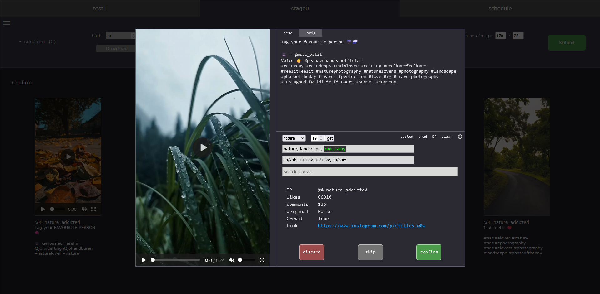
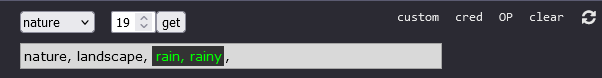
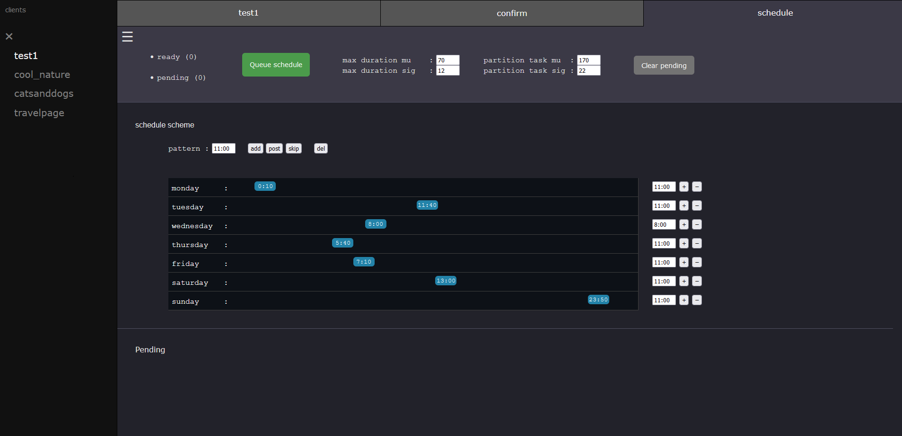

Boris Montas | December 12, 2024
Around 2 years ago I started to work on a social media related project. I created a web app that allows you to manage a social media account farm. It aims to generate organic growth with minimal human input.
Social media companies typically do not like when you run a lot of accounts from a single device and they tend to flag them as spam. The challenge lies in avoiding that. On one hand I want to run an account farm, on the other hand I want to stay on these companies' good side.
This app is designed not to cause any spam. The aim of these kinds of tools is usually marketing. People seek to promote e-commerce stores, services, influencers, etc. A lot of research went into developing my methods.
The goal of this article will not be to explain how to use the app, but to show an overview of what it can do. I am still working on more detailed documentation.
This project was built using Python, Flask, Selenium, MySQL, Javascript, HTML, CSS, PowerBI, Linux, Azure AI services
While I was developing this tool I ran into many limiting factors that made it difficult to scale to a larger number of accounts. Here are the main bottlenecks I've had to struggle with:
At the center of this tool there is the control panel. Front end developement is not my biggest strength but I am satisfied with what I made.
There are still many features I would like to add but I have to be careful about how I use the space. There's been time where I developed entire features only to end up not using them. The goal is to create an optimized workflow. The interface is separated into 3 tabs: the page configuration tab, the confirmation tab and the upload tab.
The configuration is the most important part. There is a hashtag system, page settings, scraping and, most importantly, the identity of the page. The identity determines what kind of content we are going to post. It's composed of a list of other pages who post the same kind of content as what we are going for. Algorithms on the back-end will be using it to decide what to post. Ideally the identity should contain at least 5 pages.
For now only Instagram is supported but I made sure to design the app as to allow for more platforms to be added easily. I'm planning on adding Tiktok and X (twitter).
In the context of this app, clients are groups of pages with a common theme. For now I'm planning to around 10 pages per clients. Pages on a client will be using the same storage location since they will be a lot of overlap in what they are posting. There is also the possiblity for clients to share files between them if a domain is setup.
Although cloud storage is what I had in mind at first, I quickly realized how expensive it could get so I added the option to use local storage since SSDs are a lot more cost efficient than cloud.
The second tab allows me to manually review each post before scheduling them. You can schedule a download task and posts will start populating the feed. You can then click on the posts to enlarge them and write a custom caption. I am currently developing a feature to partially automate this process.

I've been considering doing something like a ChatGPT implementation here but I'm still unsure of how I want to go about it.
There is an option to enable the hashtag system which can be very useful for certain types of pages. It makes use of the Azure's image tagging AI service to find keywords describing the image (they are highlighted in green).

Those keywords are matched with the ones defined in the hashtag configuration, allowing for various categories of hashtag to be tapped into when generating the caption. For example, if the image contains a mountain, then mountain related hashtag can appear in addition to the default hashtag categories.
There are also some keyboard shortcuts for confirming and discarding faster; CTRL+click will select confirm and ALT+click will select discard. Once you are satisfied with the selection you can click submit and the posts will be sent to the next step.
The final tab allows you to set the upload schedule. The posts will then be queued following this schedule. If there's already some posts scheduled then they will be appended at the end of the queue. There is no limit to how far in the future you can schedule. When the time comes, the client-side controller will pick up on the task and upload the post. The idea is to schedule many months worth of content in advance and then move on to the next page.

I built the back end using the Python framework Flask. I chose Flask because I only intended this to be a tool for my own personal usage; I wasn't too worried about stability or efficiency. I also expected that the app would be small so it felt appropriate to my use case. The API endpoints were also made using Flask.
I used MySQL for my database. I like using MySQL for these kinds of projects since it's generally easy to setup. I knew I would mostly be doing simple reads and writes and MySQL is pretty good for that.
Here is a relationship diagram I made:
The client is a Python program that runs parameterized tasks that have been scheduled using the control panel. The 3 main ones are: scraping task, download task and upload task. Both the scraping task and upload task are using Selenium to automate UIs. The scripts are contained in a python package which I host on github. I run the tasks in a separate thread to allow the controller to run pip upgrade before every task to update the package. This way nothing needs to be restarted when I make changes to the scripts.
This is also where a lot of the solutions to the bottlenecks are implemented. The IP address solution, the fingerprinting. I won't be sharing the specifics of those solutions in this article but I would be willing to do so in private.
Instagram has an API to access analytics data so I decided to use it to make a PowerBI dashboard. I don't have any popular pages yet so I used some sample data for the sake of example. This dashboard will be very valuable in the context of trial and error. It will allow me to see what niches of content work best and what kinds of post I should be focusing on.
There is a drilldown for the "Impression and Engagement" visual.
The order of the drilldown is: Client names -> Account names -> Individual posts.
You can see the impressions, engagement rate and the different types of engagement (likes, replies, profile visit) at each level.
In the bottom right there's a small table containing links to the posts, in case I want to investigate further.
This project turned into something much bigger than I had initially planned, but I am satisfied with how it turned out. A few times I ran into roadblocks that seemed insurmountable, but each time I was able to find ways around the problem, often taking the project in a slightly different direction. My problem solving abilities and creativity were definitely put to the test.
I've been debating whether or not I should invest more time into this project and I have decided I would keep it as a hobby project going forward. I've never been a social media person and I think the building process was more enjoyable than using the tool would be for me.